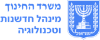

מדריך אסטרטגי - מאיים ליבשת STEM
🎯 מדריך אסטרטגי: גשרי זהב לבניית יבשת STEM
מדריך זה מסכם את האסטרטגיות המוכחות ביותר ("גשרי הזהב") להתמודדות עם האתגרים הנפוצים בבתי הספר היסודיים, בהתבסס על רציונל סינרגטי ומחקרים תומכים.
🔑 שיטת הניקוד המלאה (היחס בין הגשרים)
| סוג הגשר | ניקוד לאי בודד | תפקיד אסטרטגי |
|---|---|---|
| גשר זהב (Key Practice) | 50 נקודות | **הפתרון הקריטי:** מטפל בשורש הבעיה. חובה לבחירה להצלחה מירבית. |
| גשר תומך מיטבי (Optimized Support) | 10 נקודות | **חיזוק קיימות:** משפר את הסינרגיה ומבטיח שהפתרון יעבוד לטווח ארוך. |
| גשר רגיל (General Support) | 3-5 נקודות | **תמיכה כללית:** כל גשר נותן תמיד ניקוד בסיסי, אך אינו יעיל כמו גשר תומך מיטבי. |
1. 🏝️ איי פער ואי-שוויון (נגישות)
אתגרים אלו קשורים לכך שיוזמות STEM אינן מגיעות לכלל התלמידים והמורים, או אינן נתפסות כרלוונטיות.
| האי (האתגר) | גשר הזהב המומלץ (50 נק') | גשר תומך מיטבי (10 נק') | רציונל הסינרגיה |
|---|---|---|---|
| מועדוני העשרה וימי שיא | 🤝 שותפויות קהילה ולקוחות (עלות: 2) | 🧩 פדגוגיה של PBL רבעוני (עלות: 3) | שותפויות מבטיחות רלוונטיות, ו-PBL רבעוני מבטיח שהפרויקט יעמיק ויימשך מעבר ליום שיא בודד. |
| STEM רק במעבדת המדעים | 🌲 שימוש במרחב החיצוני (עלות: 1) | 🧱 מרחבי יצירה גמישים (עלות: 2) | שבירת חומות המעבדה מתחילה בחוץ (המרחב החיצוני) וממשיכה פנימה (מרחבי יצירה נגישים בתוך בית הספר). |
| STEM רק בשיעורי מדע/מתמטיקה | 📝 תהליך התכנון ההנדסי (עלות: 2) | 📊 ניתוח נתונים מתמטי (עלות: 2) | ה-EDP הוא המתודה המארגנת, וניתוח נתונים הוא הכלי ש**מחבר ישירות את המתמטיקה** ליישום ההנדסי. |
2. 👥 איי מנהיגות וקיימות (חוסן אנושי)
אתגרים אלו נוגעים לחוסר גיבוי ניהולי או לתלות של התוכנית באנשים בודדים.
| האי (האתגר) | גשר הזהב המומלץ (50 נק') | גשר תומך מיטבי (10 נק') | רציונל הסינרגיה |
|---|---|---|---|
| מורה חלוץ יחיד | 🧑💻 רכז/מוביל STEM + 👑 מנהיגות חזונית (עלות: 6) | 🗣️ תיעוד ציבורי של תהליכים (עלות: 1) | הרכז הופך את הידע האישי למוסדי, והתיעוד מבטיח שכל הצוות ייחשף (וישתמש) בפרקטיקות של החלוץ. |
| ציוד יקר שאינו מנוצל | 🧱 מרחבי יצירה גמישים (עלות: 2) | 🌳 פיתוח מקצועי ממוקד (עלות: 3) | מרחבי יצירה מבטיחים נגישות לציוד פשוט, ופיתוח מקצועי מבטיח שהמורים ירגישו ביטחון להשתמש בכלים אלה בפדגוגיה. |
| הוראה דיסציפלינרית נפרדת | 🔄 ישיבות תכנון משותפות + 👑 מנהיגות חזונית (עלות: 5) | 📝 תהליך התכנון ההנדסי (עלות: 2) | המנהיגות והישיבות יוצרות את הזמן והמסגרת; ה-EDP הוא ה**תוכן המשותף** המכריח את המורים לתכנן יחידה אינטגרטיבית. |
3. 🧠 איי פדגוגיה ותרבות (למידה וכישלון)
אתגרים אלו קשורים לאופן שבו מורים תופסים למידה, או לאופן שבו המערכת מעריכה אותה.
| האי (האתגר) | גשר הזהב המומלץ (50 נק') | גשר תומך מיטבי (10 נק') | רציונל הסינרגיה |
|---|---|---|---|
| הכשרות קצרות ותיאורטיות | 🌳 פיתוח מקצועי ממוקד (עלות: 3) | 📊 ניתוח נתונים מתמטי (עלות: 2) | פיתוח מקצועי ממוקד דורש תוצר מוחשי; מתן כלי ניתוח נתונים מיידיים מהווה **"מוצר מוגמר"** שקל ליישם ולחבר. |
| הערכה מסכמת בלבד | 📝 תהליך התכנון ההנדסי + 🗣️ תיעוד ציבורי של תהליכים (עלות: 3) | 🧩 פדגוגיה של PBL רבעוני (עלות: 3) | ה-EDP והתיעוד משנים את תרבות ההערכה, וה-PBL רבעוני מבטיח שהשינוי הזה יישמר ויתקיים באופן קבוע. |
| הוראה דיסציפלינרית נפרדת | 📝 תהליך התכנון ההנדסי (עלות: 2) | 🔄 ישיבות תכנון משותפות (עלות: 2) | ה-EDP נותן את ה"מה" (את המתודה), וישיבות התכנון המשותפות נותנות את ה\*\*"איך"\*\* (את הזמן והמרחב למורים ליישם יחד את המתודה). |
👑 אסטרטגיית העל (גשר קריטי לכל מצב)
שימו לב: גשר **"👑 מנהיגות בית ספרית חזונית"** הוא הגשר בעל ההשפעה הניהולית הרחבה ביותר, והוא נדרש לטיפול בכל בעיה של **קיימות, אחידות או חוסר תמיכה**. בלעדיו, כל הגשרים האחרים עלולים לקרוס.
📚 מקורות ביבליוגרפיים ורציונל מחקרי (לתמיכה בגשרים)
הפרקטיקות המוצגות במשחק מבוססות על ממצאי מחקרים מובילים בתחום החינוך ל-STEM ופיתוח מקצועי במערכות חינוך מתקדמות.
1. גשרים פדגוגיים (PBL & EDP)
- **📝 תהליך התכנון ההנדסי (EDP):**
- **Bybee, R. W. (2010).** *Advancing STEM education: A 2020 vision*. מכיר בהנדסה כעמוד תווך קריטי המחבר בין מדע ומתמטיקה בהקשר של פתרון בעיות, במיוחד בחינוך היסודי.
- **Honey, M., Pearson, G., & Schweingruber, H. (Eds.). (2014).** *STEM integration in K-12 education: Status, prospects, and an agenda for research*. דו"ח שמדגיש כי הנדסה היא המניע העיקרי לאינטגרציה אפקטיבית.
- **🧩 פדגוגיה של PBL רבעוני:**
- **Wurdinger, S. D., & Carlson, L. (2010).** *Teaching for learning: 101 innovative and integrated strategies for deeper learning*. ממליץ על למידה מבוססת פרויקטים (PBL) כגישה האידיאלית להעמקת ההבנה והמוטיבציה, תוך שימוש בידע רב-תחומי.
2. גשרים לשינוי תרבותי והערכה
- **🗣️ תיעוד ציבורי של תהליכים (תרבות כישלון בטוח):**
- **Dweck, C. S. (2006).** *Mindset: The new psychology of success*. מחקר על חשיבות ה-Growth Mindset (חשיבה מתפתחת), המעודד למידה מכישלון והתמקדות במאמץ ובתהליך (איטרציה), במקום בתוצאה הסופית.
- **Kelley, T., & Kelley, D. (2013).** *Creative confidence: Unleashing the creative potential within us all*. מדגיש את החשיבות של יצירת מרחב שבו מותר לטעות, המאפיין תרבויות חדשנות (כמו עיצוב והנדסה).
- **🤝 שותפויות קהילה ולקוחות:**
- **National Research Council. (2015).** *Science, technology, engineering, and mathematics (STEM) education in the secondary grades: Pathways to success*. מדגיש את הרלוונטיות של חיבור הלמידה לארגונים חיצוניים ולקהילה ליצירת מעורבות ואחריות אזרחית.
3. גשרי מנהיגות וקיימות
- **👑 מנהיגות בית ספרית חזונית ו-🧑💻 רכז/מוביל STEM:**
- **Fullan, M. (2001).** *Leading in a culture of change*. מחקרים על שינוי מערכתי מצביעים על כך ששינוי מוצלח תלוי במידה רבה ב**מנהיגות נחושה** המקדמת חזון, וכן בהקצאת **מובילי שינוי פנימיים** (רכזים/מובילים) שיוצרים קישוריות בין הצוותים השונים.
- **Guskey, T. R. (2002).** *Professional development and student learning: The link remains elusive*. מחקרים על פיתוח מקצועי מראים כי שינוי פרקטיקות מחייב ליווי ארוך טווח וממוקד יישום, שמנוהל באופן מיטבי על ידי **מוביל פנימי** בבית הספר.
- **🌳 פיתוח מקצועי ממוקד:**
- **Darling-Hammond, L., Hyler, M. E., & Gardner, M. (2017).** *Effective Teacher Professional Development*. מדגיש כי הפיתוח המקצועי האפקטיבי ביותר הוא זה שממוקד בתוכן, כולל **למידה אקטיבית** (תרגול מעשי, בניית יחידה), ומספק **משוב ורפלקציה**.